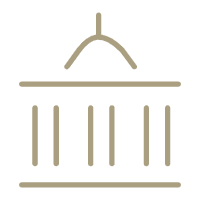

亚历山大美术馆
亚历山大美术馆
基于对美术馆教育固定模式的反思，RAM致力于在常规教育体制以外发展替代教育项目，充分鼓励每个个体的看法和见解，创造共同学习的体验，并激发不同学科和社会群体之间的批判性思考和交流。
我们试图让大家不仅仅以“观众”的身份来被动地接受信息，而是希望搭建一个公共空间，在这个空间里每个人都能成为与他人共同体验、分享经验和意见的主动个体。 我们将美术馆教育视为一种增强人们与自我、与他人以及与更广阔世界间联系的一种途径。
围绕RAM艺术项目展开的“艺术知多点”向观众开启激进的/诗意的/大胆的时刻，激发人们对于不同议题的想象力。我们希望在艺术项目和观众之间建立有意义的联系，帮助大家在探索和发现的过程中向外延伸思考，将感受与个体经验连结。
我们集结来自不同领域，但对于周边社区有着相同关注点的机构与社会文化工作者，邀请公众与我们一起关注所居住区域内的社会状况和文化多样性，试图记录、保存已经或正在消失的人文历史。在现有的社会研究基础上，重访本地当代历史及当下的日常生活体验。
作为社区网络的组织者，我们邀请艺术家、音乐家、研究者、社会学家对我们周围的社区进行田野调查，挖掘在交流、移民、入侵、权力等因素的影响下，经由不同历史层面转变而产生的文化与实践。